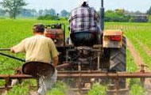

According to the Minnesota Safety Council (2014) farming is one of the most hazardous occupations in Minnesota.

Some of the hazards include working with equipment, machinery and tools, extreme weather patterns, loud noises and natural hazards including mud and ponds.
Children and the elderly are especially vulnerable to farm accidents. Another issue that faced by farmers is that rural areas are often far from advanced medical care.
Resolutions include taking precautions against injuries. Precautions may include wearing protective gear, reading and fallowing machinery instructions and checking and marinating equipment (Minnesota Safety Council, 2014).
According to the Minnesota Safety Council (2014) violence at workplaces is a growing concern. This trend includes an alarming
increase of verbal and physical assaults and homicide. While all types of organizations are at risk. Organizations that employ certain types of workers are at greater risk including: health-care providers, probation officers and community workers. In addition workers who work during non-traditional hours, with money, alone or in small groups seem to be at an increased risk (Minnesota Safety Council, 2014).
There are multiple steps organizations can take to reduce the risk of workplace violence. Some of these steps include educating workers about acceptable conduct and violence prevention (Minnesota Safety Council, 2014).
Traffic accidents are one of the leading causes of occupational injuries. This includes workers being struck by vehicles as well as transportation accidents. There are several steps organizations can take to reduce the risk of injury among its workers and others. Some of these include the use of traffic signals and devices, using barriers and good lighting and providing safety training to employees. In addition company vehicles should be equipt with safety gear and seatbelts (Minnesota Safety Council, 2014).